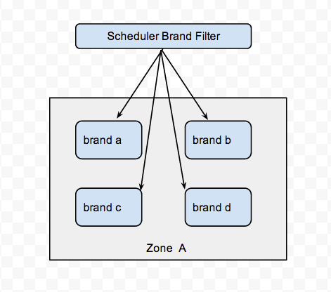

资源池物理主机分组方案¶
通常在一个云计算中心中，提供虚拟资源池计算能力的物理主机会有成百上千个， 因为业务的需求，我们需要把这些物理主机实行分组，以便区分其本身的特质， 或者提供不同的服务，本文就是讨论如何将这些物理主机按照我们设定的特质进行区分，使得通过某些设定能让虚拟机创建在指定的分组中。
东网云平台使用的是openstack提供资源池服务，而openstack中提供虚拟计算服务的 是nova组件，所以我们的目的就更加明确了，就是如何nova实现物理主机分组。
前置了解¶
首先我们先来感恩一下强大的openstack社区，社区已经充分考虑了这个应用场景， 那么我们来看一下都有哪些方案。
- Keystone的Region， 适合异地数据中心级的物理隔绝。
- Nova cell，适合管理超大规模的计算资源，部署复杂，而且不是很成熟。
- Availability Zones，简单的分组。
- Host Aggregates，可以根据自定义特质分组，简单方便。
考虑到这里写多了有抄袭之嫌，更多详情请看网友的总结(http://blog.chinaunix.net/uid-20940095-id-4064233.html)
综上可以看出真正适合我们云平台的方案，应该是Availability Zones和Host Aggregates， openstack H版本中，Availability Zones其实也是用Host Aggregates实现的， Zones被当做Aggregates的其中一个属性，而这个属性恰好已经是预先设定好的， 所有计算节点都被初始划分到nova zone中。
假定我们之前新建了一个新的zone horde，然后讲compute2划分到horde上，用命令行来感受一下，他们的关系:
$ nova aggregate-list
+----+------+-------------------+
| Id | Name | Availability Zone |
+----+------+-------------------+
| 1 | orc | horde |
+----+------+-------------------+
$ nova aggregate-details orc
+----+------+-------------------+---------------+----------------------------------+
| Id | Name | Availability Zone | Hosts | Metadata |
+----+------+-------------------+---------------+----------------------------------+
| 1 | orc | horde | [u'compute2'] | {u'availability_zone': u'horde'} |
+----+------+-------------------+---------------+----------------------------------+
$ nova-manage service list
Binary Host Zone
nova-compute compute1 nova
nova-compute compute2 horde
后面，我们会深入讨论如何将虚机创建在制定的物理位置。
实现原理¶
当你发起一个创建虚机的请求，nova收到你的请求并分析所携带的创建约束条件， 然后过滤出满足条件的主机，并在这些主机上创建虚机，这个过程主要是由nova-scheduler实现的。
想象力不够的朋友，可以看下面一张图：

上图的Filters就是真正实现物理机分组的核心，想深入研究的朋友可以看下面的核心代码:
filter_classes 是我们预先定制好的，可以自定义扩展
objs 我们可以理解为所有的计算节点
filter_properties 就是我们创建虚机时候传入的约束条件
def get_filtered_objects(self, filter_classes, objs, filter_properties, index=0):
list_objs = list(objs)
LOG.debug(_("Starting with %d host(s)"), len(list_objs))
for filter_cls in filter_classes:
cls_name = filter_cls.__name__
filter = filter_cls()
if filter.run_filter_for_index(index):
objs = filter.filter_all(list_objs,
filter_properties)
if objs is None:
LOG.debug(_("Filter %(cls_name)s says to stop filtering"),
{'cls_name': cls_name})
return
list_objs = list(objs)
LOG.debug(_("Filter %(cls_name)s returned "
"%(obj_len)d host(s)"),
{'cls_name': cls_name, 'obj_len': len(list_objs)})
if len(list_objs) == 0:
break
return list_objs
filter_classes 有nova预先设置好的，nova中自带的filter都在源码nova/scheduler目录下:
$ ls | grep filter
affinity_filter.py
all_hosts_filter.py
availability_zone_filter.py
compute_capabilities_filter.py
compute_filter.py
core_filter.py
disk_filter.py
image_props_filter.py
io_ops_filter.py
isolated_hosts_filter.py
json_filter.py
num_instances_filter.py
pci_passthrough_filter.py
ram_filter.py
retry_filter.py
trusted_filter.py
type_filter.py
filter越多实际上越影响性能，因为每个filter都要扫描全部的host，所以nova.conf中配置了真正有效的filter，配置选项是scheduler_default_filters
我们来看一下比较著名的availability_zone_filter的关键实现:
def host_passes(self, host_state, filter_properties):
spec = filter_properties.get('request_spec', {})
props = spec.get('instance_properties', {})
availability_zone = props.get('availability_zone')
if availability_zone:
context = filter_properties['context'].elevated()
metadata = db.aggregate_metadata_get_by_host(
context, host_state.host, key='availability_zone')
if 'availability_zone' in metadata:
return availability_zone in metadata['availability_zone']
else:
return availability_zone == CONF.default_availability_zone
return True
其实就是判断Host的availability_zone属性是不是和filter_properties中指定的一致， 而Host的availability_zone属性正是通过aggregates设定的(此处不懂往回看)。
特殊需求的实现¶
前面我们可以看到，用filter_properties过滤Host，那么这个filter_properties如何才能添加属性呢？ 使用nova boot可以创建虚拟机，它支持一个参数hint，其描述是这样的:
--hint <key=value> Send arbitrary key/value pairs to the scheduler for custom use.
没错这个hint就是支持我们传入自定义属性的参数。我们假定一些需求场景，看hint能不能帮我们实现。
指定特定主机¶
将虚机创建在指定的Host上，这个场景如何实现？前面提到的hint参数除了能够自定义外，nova本身也已经提供了一些属性， 比如ignore_hosts、force_hosts(force_nodes)，这些可以实现本需求:
nova boot --image 1 --flavor 2 --key_name test --hint force_hosts=server1 my_server
或者也可以
nova boot --image 1 --flavor 2 --key_name test --availability-zone nova:server1 my_server
复杂场景¶
假定我们有一个zone A，然后A中的主机根据品牌分为华为、曙光、浪潮、惠普四部分，每部分各有一定数量的机器，如图所示：
我们可以实现将虚机创建在指定的品牌主机上，我们需要通过hint传入特定的参数(brand)，并在filter_classes中能够支持解析这个参数的意图。
代码示例(可能是伪代码^_^):
def host_passes(self, host_state, filter_properties):
spec = filter_properties.get('request_spec', {})
props = spec.get('instance_properties', {})
brand = props.get('brand')
context = filter_properties['context'].elevated()
metadata = db.aggregate_metadata_get_by_host(
context, host_state.host, key='brand')
return brand in metadata['brand']